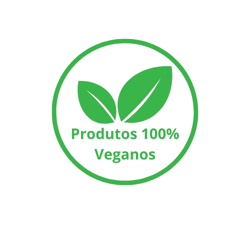

Limpeza, Higienização e Impermeabilização de Estofados.
Orçamento gratuito Limpeza e Higienização de Estofados
Cuidar dos seus estofados vai além da estética, é garantir um ambiente mais saudável e livre de impurezas. Nosso serviço especializado de limpeza e higienização de estofados utiliza produtos 100% veganos, que não só proporcionam uma limpeza profunda, mas também eliminam ácaros, bactérias e fungos – agentes invisíveis que podem causar doenças alérgicas e respiratórias.
Com tecnologia de ponta e fórmulas ecológicas, nossos produtos não agredem o meio ambiente e são totalmente seguros para você e sua família. Eles limpam sem deixar resíduos tóxicos, trazendo de volta o conforto e bem-estar que seus estofados merecem.
Impermeabilização de Estofados
Garanta a durabilidade e a beleza dos seus estofados com o nosso serviço de impermeabilização Premium. Utilizamos produtos não inflamáveis, proporcionando total segurança, sem risco de incêndio ou explosão. Além de proteger contra líquidos e sujeiras, nossa impermeabilização forma uma camada protetora que ajuda a manter o seu estofado impecável por muito mais tempo.
Limpeza de Tapetes e Carpetes

Seus tapetes ou carpete merecem mais do que uma limpeza superficial. Nosso serviço especializado em limpeza de tapetes e carpetes oferece uma higienização completa, removendo sujeiras, manchas e odores, e proporcionando um ambiente mais saudável e acolhedor para sua casa ou escritório.
Utilizamos técnicas avançadas e produtos ecológicos, eficazes na remoção de ácaros, bactérias e impurezas, garantindo não apenas a estética, mas também a saúde do ambiente. Além disso, nossos métodos asseguram que seu tapete ou carpete seque rapidamente, sem danificar as fibras, preservando sua qualidade e aparência por mais tempo.
O que nossos clientes dizem
Quem somos

Fundada em 2022, a LEZ SERVICES nasceu com o compromisso de oferecer aos nossos clientes as melhores soluções para limpeza, higienização e impermeabilização de estofados. Nosso objetivo é transformar a experiência do cliente, trazendo não só estética e beleza aos seus móveis, mas também saúde e conforto para o seu ambiente.
Buscamos constantemente inovações no mercado, investindo em produtos e técnicas de alta tecnologia, garantindo resultados eficazes e duradouros. Nossos profissionais são altamente capacitados e estão sempre em constante atualização para proporcionar um serviço de excelência, alinhado às tendências e melhores práticas do setor.
Com a LEZ SERVICES, seus estofados estarão sempre protegidos, limpos e renovados, elevando o ambiente de sua casa ou escritório e proporcionando um espaço mais saudável e agradável para você e sua família.